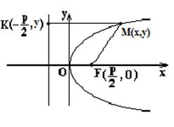

6.3.4. Парабола

Параболой называется геометрическое место точек  , равноудалённых от заданной точки (называемой фокусом параболы)
и от данной прямой (называемой директрисой параболы).
, равноудалённых от заданной точки (называемой фокусом параболы)
и от данной прямой (называемой директрисой параболы).
, равноудалённых от заданной точки (называемой фокусом параболы)
и от данной прямой (называемой директрисой параболы). Каноническое уравнение параболы может быть получено
непосредственно из определения параболы.
По определению
. ,
.
Таким образом, получено равенство
или
,
откуда
 Каноническое
уравнение параболы
.
Каноническое
уравнение параболы
.Полученное уравнение называется каноническим уравнением
параболы.
Элементами параболы являются: точка  – вершина параболы;
– вершина параболы;  – ось параболы; точка
Уравнение
директрисы параболы
– фокус параболы; –
уравнение директрисы параболы; – эксцентриситет параболы;
– ось параболы; точка
Уравнение
директрисы параболы
– фокус параболы; –
уравнение директрисы параболы; – эксцентриситет параболы;  – фокальный параметр (расстояние
от фокуса до директрисы или половины хорды, проходящей через фокус перпендикулярно
оси ).
– фокальный параметр (расстояние
от фокуса до директрисы или половины хорды, проходящей через фокус перпендикулярно
оси ).
– вершина параболы; – ось параболы; точка
Уравнение
директрисы параболы
– фокус параболы; –
уравнение директрисы параболы; – эксцентриситет параболы; – фокальный параметр (расстояние
от фокуса до директрисы или половины хорды, проходящей через фокус перпендикулярно
оси ).